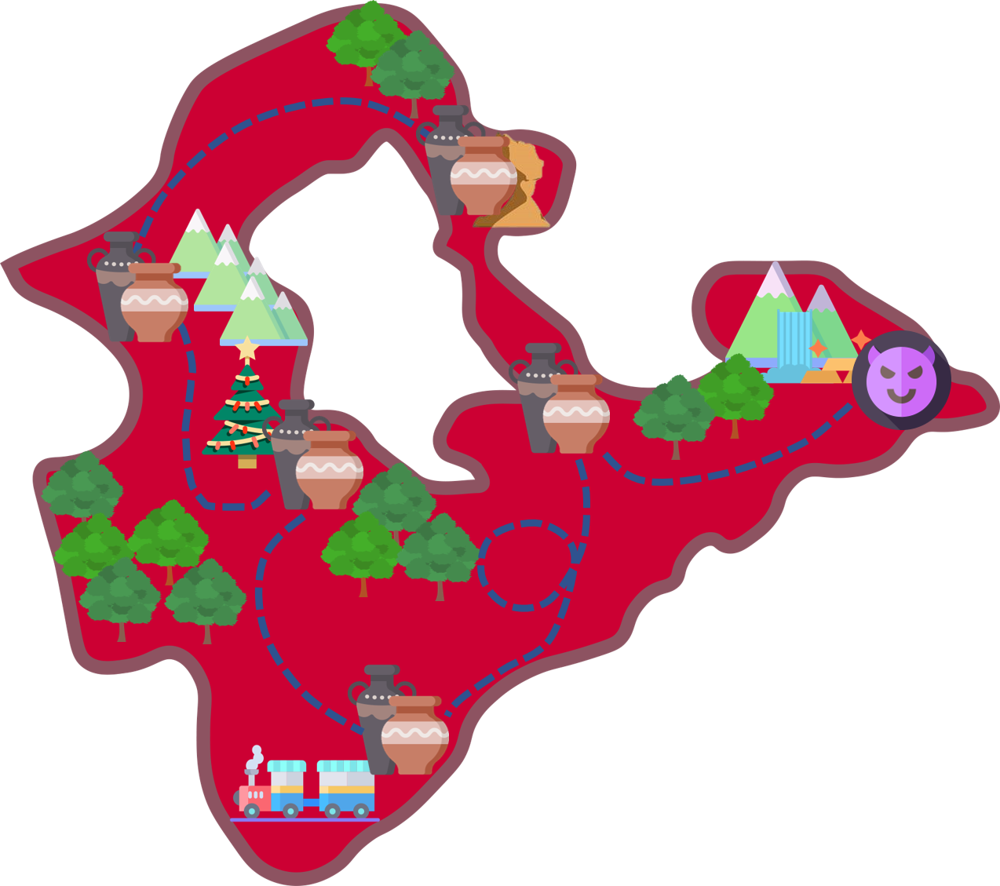

location.href='../../view/game/drawzhuyin.html?id=k1&counties=newTaipei',800);playABC(this);" />

location.href='../../view/game/drawzhuyin.html?id=l1&counties=newTaipei',800);playABC(this);" />
location.href='../../view/game/drawzhuyin.html?id=m1&counties=newTaipei',800);playABC(this);" />
location.href='../../view/game/drawzhuyin.html?id=n1&counties=newTaipei',800);playABC(this);" />